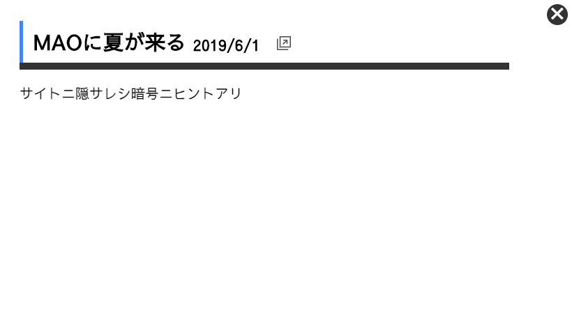
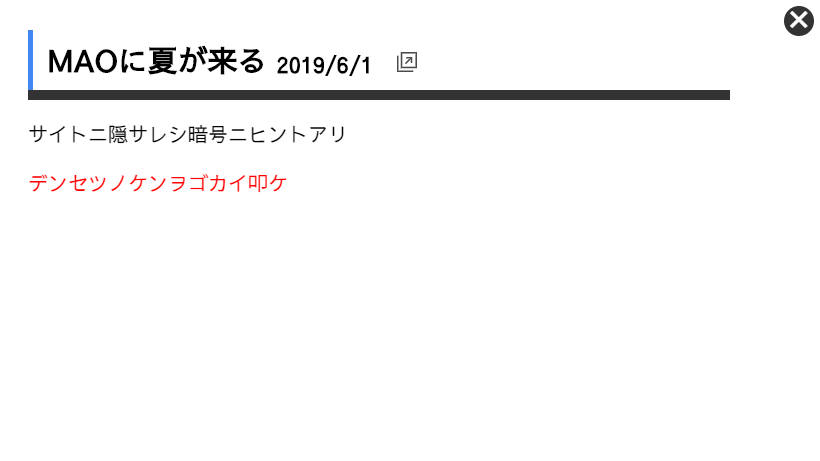
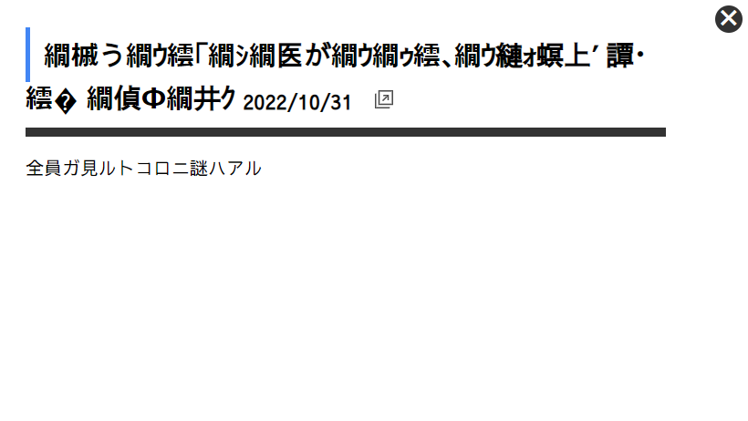

こちらは解答になります。ネタバレにお気をつけてｯ！
注意: こちらは解答になります。ネタバレにお気をつけてｯ！
#1 謎のハジマリ
サイトに仕掛けられた謎のハジマリ、それはMAO夏イベントの事前情報に書かれていました。
この記事をよく見ると、実はヒントが白い文字で見えないように隠されていました。

内容は、「デンセツノケンヲゴカイ叩ケ」
一体何のことでしょうか。
サイト内の「JOIN」をよく見ると･･･
岩に刺さった剣のアイコンがありました。
これを指示通り、五回たたくと...

今度は、「全員ガ見ルトコロニ謎ハアル」とのヒントが...
全員が見るところとは、サイトを開いたときに表示されるこの画像のこと。
この画像に、実はモールス信号が隠されていました。
・・－・ ・－・・ ・－ －・ －・・ ・－・・ ・ ・・・ －・－・ ・－ ・－・ ・－・・ ・ －
解読すると、「FLANDLESCARLET」となります。
つまり答えは、「FLANDLESCARLET」 だ！
少し待ってください。
時間とともに捻じ曲がる背景。
ヒントがまたヒントにつながっているという不自然なヒント。
このサイトにある謎はこれですべてなのでしょうか。
「違う視点」を持つことで、新たな「答え」にたどり着くかもしれません。